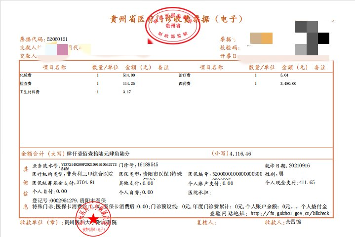

归梦
@GuiMengNya
@Girl_in_HuaXi 中国人口太多了，医保只会给社会造成更大的负担，支持自费看病 0 医保，有钱人活下去享受优质医疗资源，没钱的的听天由命

姜是姜子牙的姜
@Girl_in_HuaXi
我为何坚定地支持共产党，拥护习近平？（十二）
偶然翻到一个患尿毒症的大哥2021年发在朋友圈的他看病的发票，他家交的是农村居民基本医疗保险，因为尿毒症属于特殊病种，即使他在三甲医院看病，报销比例也达到了90%。很多人在攻击中国的医保，可是世界上又有几个国家有性价比这么高的医保呢？ https://t.co/ivNe430kZZ